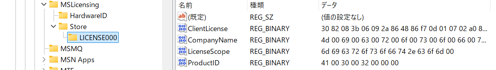
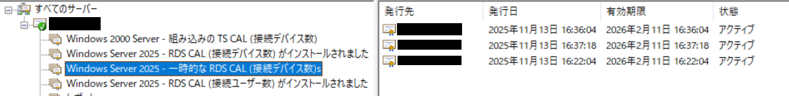
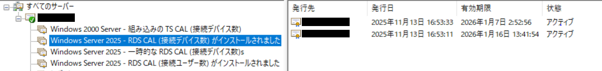
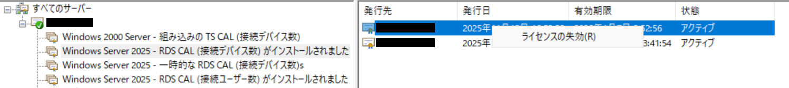
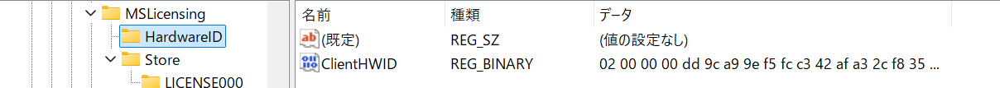
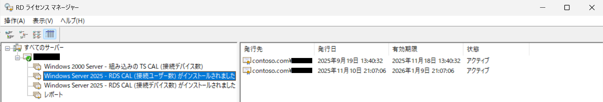

本記事は、マイクロソフト社員によって公開されております。
こんにちは、Windows サポートチームの岩永です。
今回は、リモート デスクトップ サービスで利用される CAL (Client Access License) の概要および動作についてご説明いたします。
Windows Server に多数のセッションを同時に接続させるためには、リモート デスクトップ サービス環境を構築する必要がありますが、ご利用いただくためには、各クライアントに対して、リモート デスクトップ サービス クライアント アクセス ライセンス (RDS CAL) を発行します。
本記事では CAL の動作原理や有効期限について、よくいただくご質問をまとめました。ぜひご参考ください。
なお、本記事中で CAL と記載しておりますが、すべて RDS CAL についての言及となります。
公開情報：
クライアント アクセス ライセンス (CAL) を使用してリモート デスクトップ サービスをライセンスする | Microsoft Learn
https://learn.microsoft.com/ja-jp/windows-server/remote/remote-desktop-services/rds-client-access-license
1. CAL の概要
CAL は大きく以下の 2 種類に分類されます。
- デバイス CAL
- ユーザー CAL
この 2 種類は、お客様のリモート デスクトップ サービス環境に応じて、使い分けていただく必要があります。
簡単に説明すると、デバイス CAL は接続元デバイス (クライアント) ごとに発行され、ユーザー CAL は接続ユーザーごとに発行されます。
例えば、1 台のデバイスを複数人でご利用いただく環境の場合はデバイス CAL、1 人のユーザーが複数のデバイスをご利用いただく環境の場合はユーザー CAL を選択する事で、購入 (インストール) いただく CAL の数量を効率よく管理できます。
重要なポイントとして、1 台のセッション ホスト サーバーに対しては、デバイス CAL を使って接続させるか、ユーザー CAL を使って接続させるかに応じて、いずれかのライセンス モードを選択する必要があります。
セッション ホスト サーバーが両方の CAL に応じる事はできません。
なお、1 台のライセンス サーバーに、デバイス CAL、ユーザー CAL の両方をインストールする事は可能です。
デバイス CAL、ユーザー CAL はそれぞれ発行動作が異なります。
次項でそれぞれの動作概要をご説明します。
2. デバイス CAL について
デバイス CAL は、クライアント コンピューター (デバイス) に対してセッション ホスト サーバーへアクセスする権限を与えます。
デバイス CAL が一度発行されると、その情報がクライアント コンピューターの以下のレジストリに格納されます。
HKEY_LOCAL_MACHINE\SOFTWARE\Microsoft\MSLicensing\Store\LICENSE00x

デバイス CAL は、初回接続時に発行される一時 CAL と、2 回目の接続時に発行される恒久 CAL の 2 種類が存在します。
一時 CAL
クライアント コンピューターからセッション ホスト サーバーに初めて接続した時に発行されるライセンスです。
一時 CAL の有効期限は、一律で 90 日間となり、恒久 CAL の余剰数がない場合は、2 回目以降の接続時も一時 CAL のまま接続します。
一時 CAL の発行数に制限はありません。

恒久 CAL
一時 CAL を持っているクライアント コンピューターが 2 回目に接続した時に発行されるライセンスです。
恒久 CAL の有効期限は、52 日間から 89 日間のランダムな期間が設定されます。
この有効期限を任意の期間にすることはできません。
ライセンス サーバーにインストールした数量を上限として発行されます。

上記のとおり、デバイス CAL は一時 CAL、恒久 CAL ともに有効期限があります。
有効期限を過ぎた場合には、接続ができなくなります。
そのため、セッション ホスト サーバーに接続するクライアント コンピューター数を適切に管理する必要があります。
恒久 CAL の更新について
恒久 CAL の有効期限は、52 日間から 89 日間のランダムな期間が設定されますが、その有効期限日の 1 週間前から CAL の更新期間となります。
更新期間中にセッション ホスト サーバーに接続することで、新たに 52 日間から 89 日間のランダムな期間が設定されます。
ライセンスの失効について
ライセンス マネージャー上から、失効処理を行うことができます。
接続することがなくなったクライアントや、誤って接続して発行させてしまったクライアントに対して、発行された CAL を失効させ、別のクライアントのために発行の余剰を作ることができます。

失効できる数はインストールしている CAL 総数の 20 % までとなります。
また、失効された CAL につきましても、発行先のクライアントが保持する CAL の情報は変わりませんので、有効期限内は接続できます。
失効処理は、あくまでライセンス サーバーでの管理上の情報となります。
極端な例となりますが、100 CAL が存在し、全ての CAL が発行済みであるとします。
その状態で上限となる 20 % の CAL を失効させ、さらに新規で 20 台のクライントが接続し、恒久 CAL が発行された場合、一時的には 120 台のクライアントが恒久 CAL を持つ状態となります。
クライアント の識別について
セッション ホスト サーバーは、接続元のクライアントをコンピューター名ではなく、各クライアントが一意で持つ Hardware ID で識別します。
仮に同じコンピューター名を持つクライアントから接続を受け付けた場合においても、別のクライアントとして管理されます。
Hardware ID は、クライアント コンピューターの以下のレジストリにあります。
HKLM\Software\Microsoft\MSLicensing\HardwareID\ClientHWID

ただし、ライセンス マネージャー上では、コンピューター名のみで表示されますので、同じコンピューター名を持つクライアントが存在する環境や、コンピューター名の変更が発生する場合には注意が必要です。
また、ライセンス マネージャー上は、初回 CAL 発行時のコンピューター名で表示されますので、CAL を持つクライアントのコンピューター名を変更した場合においても、旧コンピューター名のまま表示されます。
3. ユーザー CAL について
ユーザー CAL には、デバイス CAL のような、一時 CAL や恒久 CAL といった概念はありません。
また、デバイス CAL のように、接続元クライアントのレジストリに情報が記録される動作もありません。
CAL の発行情報は、ドメイン コントローラー上の各ユーザー コンテナに格納されます。
ライセンス サーバーがドメイン環境の場合は、ライセンス マネージャー上でユーザー CAL の発行状況を確認できます。

なお、ユーザー CAL の有効期限は一律で 60 日間となっておりますが、その有効期限は、あくまでその時点で発行されているユーザー CAL の情報管理のために使われるものとなります。有効期限を超過した場合も、超過直後の接続時に新たな有効期限が付与されますので、長期間アクセスが無い場合においても、接続不可となることは発生いたしません。
ユーザー CAL (ユーザー数ライセンス モード) では、1 人のユーザーに対して、無制限の数のクライアントからセッション ホスト サーバーにアクセスする権限が与えられます。
ユーザー数ライセンス モードはライセンスによって強制されることはありません。
そのため、ライセンス サーバーにインストールされている CAL の数に関係なく、クライアント接続を行うことができます。
ただしこれによって、各ユーザーに有効な CAL を持たせなければならないという、マイクロソフト ソフトウェア ライセンス条項の要件から管理者が免除されるわけではありません。
ユーザー数ライセンス モードを使用している場合に、各ユーザーに有効な CAL を持たせることができなければ、ライセンス条項違反となります。
4. 必要なライセンス数について
上記のとおり、RDS CAL には有効期限があり、一定の期間にわたって有効です。接続時だけ一時的に付与されるものではありません。
そのため、必要なライセンス数は、同時に接続する数ではなく、接続する可能性があるユーザー数やデバイス数に基づいて決まります。
例えば、ユーザー CAL を使用する際、同じ期間内に RDS 接続するユーザーが 10 人いる場合は、同時接続が 5 人であっても 10 CAL が必要です。
5. デバイス CAL 運用において、クライアントが接続できなくなった際の暫定対策について
ライセンス マネージャー上で、対象クライアントに対してライセンスが正常に発行されているにも関わらず、クライアントがセッション ホスト サーバーに接続できなくなった場合や、恒久 CAL の余剰数がない状態で有効期限が超過したクライアントをどうしても接続させる必要がある場合の暫定対策を説明いたします。
暫定対策 : クライアントのレジストリ削除
クライアントで保持しているライセンス情報、および HardwareID のレジストリを削除することで、セッション ホスト サーバー側で、新規接続のクライアントと判断され、ライセンス サーバーから一時 CAL が発行されます。
そのため、一時 CAL にて、90 日間はリモート デスクトップ接続が可能となります。
恒久 CAL に使用可能な数が残っている場合には、2 回目の接続時に一時 CAL から恒久 CAL に変わります。
削除する必要のあるレジストリは以下となります。
HKEY_LOCAL_MACHINE\SOFTWARE\Microsoft\MSLicensing\HardwareID\ClientHWIDHKEY_LOCAL_MACHINE\SOFTWARE\Microsoft\MSLicensing\Store\LICENSE00x
(LICENSE00x は x に数字が入ります。いくつか存在する場合がありますので、すべて削除します)
公開情報：
リモート デスクトップ プロトコル (RDP) クライアントからターミナル サーバー ライセンスを削除する - Windows Server | Microsoft Learn
https://learn.microsoft.com/ja-jp/troubleshoot/windows-server/remote/remove-terminal-server-licenses-from-rdp
なお、上記レジストリの削除につきましては、クライアント PC の administrator 権限があるユーザーにて実行する必要があります。
また、初回接続時に、新たに HardwareID レジストリが作成されますので、初回接続時につきましても、administrator 権限のあるユーザーにて実施する必要があります。
補足情報 : 多段 RDP 接続について
条件つきとはなりますが、2 段 RDP 接続はサポートされております。
詳細は以下の公開情報を参照ください。
公開情報：
リモート デスクトップ接続セッションを実行する - Windows Server | Microsoft Learn
https://learn.microsoft.com/ja-jp/troubleshoot/windows-server/remote/run-remote-desktop-connection-session
例 : Windows 11 — RDP —> Windows Server 2025 (1) — RDP —> Windows Server 2025 (2)
なお、CAL については、[Windows Server 2025 (1)] に接続するために、[Windows 11] に必要となり、[Windows Server 2025 (2)] に接続するために、中継となる [Windows Server 2025 (1)] に発行される必要がございますので、数量の管理にはご留意願います。
修正履歴
- 2025.11.1X 旧 Blog より移行
本情報の内容 (添付文書、リンク先などを含む) は、作成日時点でのものであり、予告なく変更される場合があります。